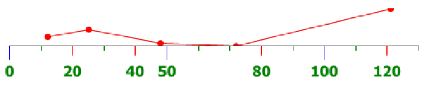
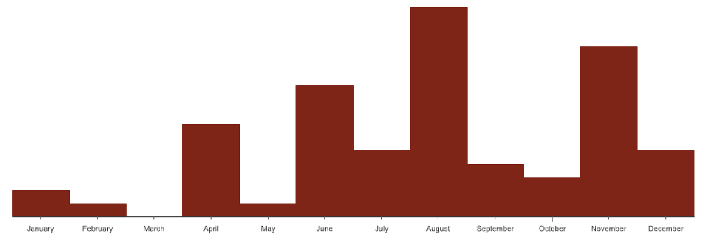
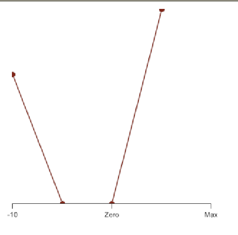

4.4.2 Axis Options
The precedent example shows how axis can be customized. There are a lot of options
for Axis …
4.4.2.1 Ticks Options
Axes can show up to 3 different kinds of ticks: major minor, and micro. You can
enable/disable them with the corresponding methods :
public void setMinorTicks(Boolean minorTicks);
public void setMajorTicks(Boolean majorTicks);
public void setMajorTicks(Boolean microTicks);
Each of these ticks types have different options:
-
length:
- the length of the ticks, in pixels
-
color:
- the color of the ticks
-
step:
- the step between the ticks
The corresponding methods names are pretty straightforward:
setMajorTicksColor(String)
setMajorTicksLength(
double)
setMajorTickStep(
double)
setMinorTicksColor(String)
setMinorTicksLength(
double)
setMicroTickStep(
double)
setMicroTicksColor(String)
setMicroTicksLength(
double)
setMicroTickStep(
double)
Minor and Major ticks can also show labels :
setMajorLabels(Boolean)
setMinorLabels(Boolean)
Example :
The following example demonstrates the use of ticks options.
Axis xLinesAxis =
new Axis(Axis.BOTTOM | Axis.HORIZONTAL);
xLinesAxis.setMajorTickStep(50);
xLinesAxis.setMajorTicksLength(15);
xLinesAxis.setMajorTicksColor("blue");
xLinesAxis.setMinorTickStep(20);
xLinesAxis.setMinorTicksLength(10);
xLinesAxis.setMinorLabels(
true);
xLinesAxis.setMinorTicksColor("red");
xLinesAxis.setMicroTicks(
true);
xLinesAxis.setMicroTickStep(10);
xLinesAxis.setMicroTicksLength(5);
xLinesAxis.setMicroTicksColor("green");
4.4.2.2 Miscellaneous options
This set of options allow you to customize some axis properties such as its minimum
and maximum, if it should be aligned on ticks etc...
-
setIncludeZero(Boolean):
- sets whether the axis should be forced to include
the zero.
-
setMax(double):
- sets the maximum value displayed on the axis
-
setMin(double):
- sets the minimum value displayed on the axis
-
setNatural(boolean):
- forces the ticks to be aligned on natural numbers
-
setFixed(Boolean):
- sets whether the labels precision is fixed
-
setFont(String):
- sets the font used for the labels
-
setFontColor(String):
- sets the font color used for the labels
-
setFixLower(String):
- forces the lower axis bound
to be aligned on a tick. Possible values are : AXIS.FIX_TYPE_MAJOR,
AXIS.FIX_TYPE_MINOR, AXIS.FIX_TYPE_MICRO
-
setFixUpper(String)
- : same as setFixLower, but for the upper bound.
Example :
xLinesAxis.setFixed(
true);
xLinesAxis.setFixLower(Axis.FIX_TYPE_MAJOR);
xLinesAxis.setFixUpper(Axis.FIX_TYPE_MICRO);
xLinesAxis.setFont("normal␣normal␣bold␣12pt␣Tahoma");
xLinesAxis.setFontColor("green");

Notice the upper value is aligned on a micro tick, the lower one is aligned on a
major tick.
4.4.2.3 Labels
The Axis class provides default labels : they correspond to the actual value on the
axis. But you can also provide your own labels.
public void addLabel(
double forValue, String text)
This method customizes the label for the given forValue. Example :
String[] labels =
new String[]{"January","February","March","April","May","June","July","August","September","October","November","December"};
for (
int i = 0; i < labels.length; i++) {
xColumnsAxis.addLabel(i+1,labels[i]);
}
For each integer value on the X axis, we set the label to the corresponding
month.

We could have done it as easily with the following method, which only adds labels
for integer values, in the given order.
public void addLabels(String[] labels)
Example :
String[] labels =
new String[]{"January","February","March","April","May","June","July","August","September","October","November","December"};
xColumnsAxis.addLabels(labels);
The above example will have exactly the same effect as the previous
one.
These methods only converts the given value/label couple into an AxisLabel
object.
You can also use the AxisLabel object directly:
public List<AxisLabel> getDiscreteLabels(){
List<AxisLabel> labels =
new ArrayList<AxisLabel>();
labels.add(
new AxisLabel("Zero",0));
labels.add(
new AxisLabel("Max",10));
labels.add(
new AxisLabel("Min",
-10));
return labels;
}
xLinesAxis.addLabels(getDiscreteLabels());
